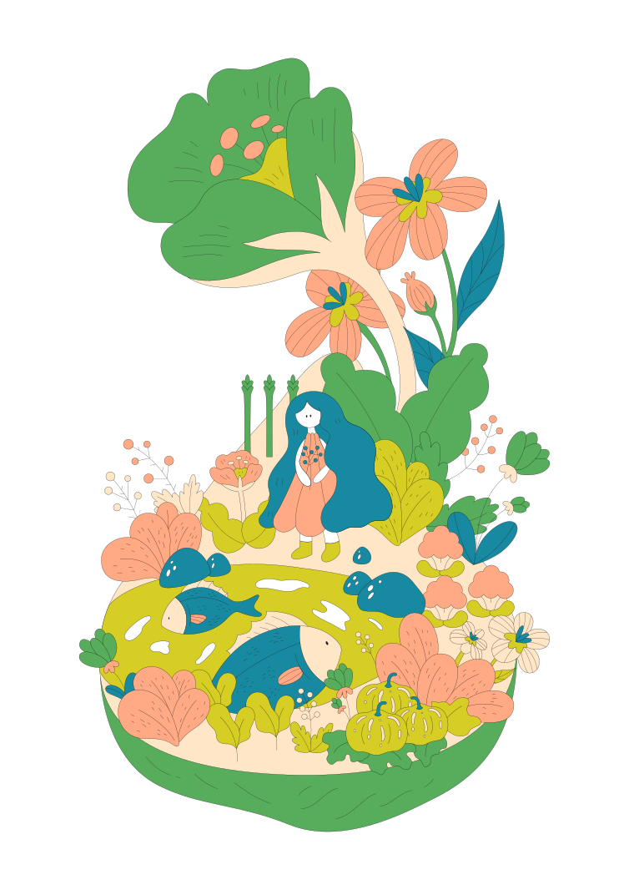

<!DOCTYPE html>
<html lang="tw">

<head>
    <meta charset="UTF-8">
    <meta name="viewport" content="width=device-width, initial-scale=1, shrink-to-fit=no">
    <meta http-equiv="X-UA-Compatible" content="ie=edge">
    <!-- Bootstrap CSS -->
    <!-- <link rel="stylesheet" href="css/lib/bootstrap-grid.min.css"> -->

    
    <link rel="stylesheet" href="css/animsition.min.css">
    <link rel="stylesheet" href="https://cdnjs.cloudflare.com/ajax/libs/Swiper/4.4.6/css/swiper.css">
    <link rel="stylesheet" href="css/style.css">
    <title>INSEASON</title>
    <meta name="description"
        content="Providing MIL-SPEC cable harnesses and integrated solutions to make the connections you can rely on.">
    <link rel="shortcut icon" href="img/favicon.png">
    <script src="js/lib/jquery-3.2.1/jquery.min.js"></script>
    <script src="js/lib/jquery-3.2.1/jquery-migrate.js"></script>
    <script src="https://cdn.bootcss.com/headroom/0.9.4/jQuery.headroom.min.js"></script>
    <script src="https://cdn.bootcss.com/headroom/0.9.4/headroom.min.js"></script>
    <script src="js/lib/smooth-scroll-1.4.6/smooth-scroll.js"></script>
    <script src="https://cdnjs.cloudflare.com/ajax/libs/bodymovin/5.4.3/lottie.min.js"></script>
    <script src="js/lib/parallax-master/parallax.min.js"></script>
    <script src="js/lib/animsition-master/animsition.min.js"></script>
    <script src="https://cdnjs.cloudflare.com/ajax/libs/Swiper/4.4.6/js/swiper.js"></script>

    <script src="js/site/island.js"></script>
    <script src="js/site/global.js"></script>

</head>

<body>
    <div class="wrapper container-fluid">
        <!-- nav -->
        <nav id="nav" class="_nav _nav--white">
            <div class="row align-items-center">
                <div class="col-2 text-center">
                    <span class="_nav__menu align-end mr-2">Menu</span>
                    <svg id="nav-bar" class="_nav__menu_icon align-middle" xmlns="http://www.w3.org/2000/svg" width="22"
                        height="9" viewBox="0 0 22 9">
                        <g data-name="Group 138" transform="translate(-188.5 -78)">
                            <line data-name="Line 1" x2="22" transform="translate(188.5 78.5)" fill="none"
                                stroke="rgba(21,21,21,0.9)" stroke-width="1" />
                            <line data-name="Line 2" x2="22" transform="translate(188.5 86.5)" fill="none"
                                stroke="rgba(21,21,21,0.9)" stroke-width="1" />
                        </g>
                    </svg>
                </div>
                <div class="_nav_menu">
                    <ul class="_nav_menu__block">
                        <li>
                            <a class="_nav_menu__title _nav_menu__title--home" href="index.html">inseason</a>
                        </li>
                        <li>
                            <a class="_nav_menu__title _nav_menu__title--about" href="about.html">about</a>
                        </li>
                        <li>
                            <a class="_nav_menu__title _nav_menu__title--explore" href="island.html">explore</a>
                        </li>
                        <li>
                            <a class="_nav_menu__title _nav_menu__title--gallery" href="">gallery</a>
                        </li>
                        <li>
                            <a class="_nav_menu__title _nav_menu__title--recipe" href="recipe.html">recipe</a>
                        </li>
                    </ul>
                    <span class="_nav_menu__close"></span>
                </div>
                
                <div class="col-2 text-center">
                    <svg class="_nav__sns align-middle mr-3" xmlns="http://www.w3.org/2000/svg" width="16.691"
                        height="16.691" viewBox="0 0 16.691 16.691">
                        <g data-name="FB black" transform="translate(-1089 -73.24)">
                            <path data-name="Path 16"
                                d="M1105.732,72.135h-14.848a.922.922,0,0,0-.922.922V87.906a.921.921,0,0,0,.922.92h7.994V82.363H1096.7V79.844h2.176V77.986a3.035,3.035,0,0,1,3.24-3.33,17.7,17.7,0,0,1,1.944.1v2.253h-1.334c-1.046,0-1.248.5-1.248,1.226v1.609h2.494l-.325,2.519h-2.169v6.462h4.253a.92.92,0,0,0,.92-.921V73.057A.921.921,0,0,0,1105.732,72.135Z"
                                transform="translate(-0.962 1.105)" fill="rgba(21,21,21,0.9)" />
                        </g>
                    </svg>
                    <svg class="_nav__sns align-middle mr-3" xmlns="http://www.w3.org/2000/svg" width="17.17"
                        height="17.17" viewBox="0 0 17.17 17.17">
                        <g data-name="IG black" transform="translate(-1122.927 -73)">
                            <path data-name="Path 15"
                                d="M1132.474,73.443c2.292,0,2.564.008,3.469.05,2.327.106,3.414,1.21,3.52,3.519.041.9.049,1.177.049,3.469s-.009,2.564-.049,3.469c-.107,2.307-1.191,3.413-3.52,3.519-.905.042-1.176.05-3.469.05s-2.564-.008-3.469-.05c-2.333-.106-3.414-1.215-3.52-3.52-.041-.9-.05-1.176-.05-3.469s.01-2.563.05-3.469c.107-2.308,1.191-3.413,3.52-3.519C1129.91,73.451,1130.181,73.443,1132.474,73.443Zm0-1.548c-2.332,0-2.624.01-3.54.052-3.117.143-4.85,1.873-4.993,4.993-.042.917-.052,1.209-.052,3.54s.01,2.624.051,3.54c.143,3.118,1.873,4.851,4.994,4.994.916.041,1.208.051,3.54.051s2.624-.01,3.539-.051c3.115-.143,4.852-1.873,4.993-4.994.043-.916.053-1.208.053-3.54s-.01-2.623-.052-3.539c-.14-3.115-1.872-4.85-4.993-4.994C1135.1,71.9,1134.805,71.895,1132.474,71.895Zm0,4.177a4.409,4.409,0,1,0,4.408,4.408A4.409,4.409,0,0,0,1132.474,76.072Zm0,7.27a2.861,2.861,0,1,1,2.861-2.862A2.861,2.861,0,0,1,1132.474,83.342Zm4.583-8.474a1.03,1.03,0,1,0,1.029,1.03A1.03,1.03,0,0,0,1137.057,74.868Z"
                                transform="translate(-0.962 1.105)" fill="rgba(21,21,21,0.9)" />
                        </g>
                    </svg>
                    <svg class="_nav__sns align-middle" xmlns="http://www.w3.org/2000/svg" width="14.372"
                        height="14.486" viewBox="0 0 14.372 14.486">
                        <g data-name="SEARCH black" transform="translate(-1158.868 -74.343)">
                            <path data-name="Path 17"
                                d="M1174.2,86.3l-3.746-3.745a5.878,5.878,0,1,0-1.441,1.4l3.766,3.765Zm-12.649-7.192a4.151,4.151,0,1,1,4.151,4.151A4.156,4.156,0,0,1,1161.553,79.111Z"
                                transform="translate(-0.962 1.105)" fill="rgba(21,21,21,0.9)" />
                        </g>
                    </svg>
                </div>
            </div>
        </nav>


        <!-- island-intro -->
        <div class="_island_intro">
            <p class="_island_intro__text">Scroll to discover</p>
            <!-- island -->
            <div class="_island_intro__circle _island_intro__circle--1">
                <!-- 1-4月 -->
                <div class="_island_intro__seasonSection _island_intro__seasonSection--1">
                    <!-- 控制圓形內x軸的兩個island -->
                    <div class="_island_intro__row--x">
                        <div class="_island_intro__main--reverse">
                            
                            <div class="_island_intro__month">
                                <p>MAR.</p>
                                <span>3</span>
                            </div>
                            <!-- <p class="_island_intro__text">Scroll to discover</p> -->
                        </div>
                        <div class="_island_intro__main">
                            
                            <div class="_island_intro__month">
                                <p>JAN.</p>
                                <span>1</span>
                            </div>
                            <!-- <p class="_island_intro__text">Scroll to discover</p> -->
                        </div>
                    </div>

                    <!-- 控制圓形內y軸的兩個island -->
                    <div class="_island_intro__row--y">
                        <div class="_island_intro__main--reverse">
                            
                            <div class="_island_intro__month">
                                <p>APR.</p>
                                <span>4</span>
                            </div>
                            <!-- <p class="_island_intro__text">Scroll to discover</p> -->
                        </div>
                        <div class="_island_intro__main">
                            
                            <div class="_island_intro__month">
                                <p>FEB.</p>
                                <span>2</span>
                            </div>
                            <!-- <p class="_island_intro__text">Scroll to discover</p> -->
                        </div>
                    </div>
                </div>


                <!-- 5-8月 -->
                <div class="_island_intro__seasonSection _island_intro__seasonSection--2">
                    <!-- 控制圓形內x軸的兩個island -->
                    <div class="_island_intro__row--x">
                        <div class="_island_intro__main--reverse">
                            
                            <div class="_island_intro__month">
                                <p>JUL.</p>
                                <span>7</span>
                            </div>
                            <!-- <p class="_island_intro__text">Scroll to discover</p> -->
                        </div>
                        <div class="_island_intro__main">
                            
                            <div class="_island_intro__month">
                                <p>MAY.</p>
                                <span>5</span>
                            </div>
                            <!-- <p class="_island_intro__text">Scroll to discover</p> -->
                        </div>
                    </div>

                    <!-- 控制圓形內y軸的兩個island -->
                    <div class="_island_intro__row--y">
                        <div class="_island_intro__main--reverse">
                            
                            <div class="_island_intro__month">
                                <p>AUG.</p>
                                <span>8</span>
                            </div>
                            <!-- <p class="_island_intro__text">Scroll to discover</p> -->
                        </div>
                        <div class="_island_intro__main">
                            
                            <div class="_island_intro__month">
                                <p>JUN.</p>
                                <span>6</span>
                            </div>
                            <!-- <p class="_island_intro__text">Scroll to discover</p> -->
                        </div>
                    </div>
                </div>


                <!-- 9-12月 -->
                <div class="_island_intro__seasonSection _island_intro__seasonSection--3">
                    <!-- 控制圓形內x軸的兩個island -->
                    <div class="_island_intro__row--x">
                        <div class="_island_intro__main--reverse">
                            
                            <div class="_island_intro__month">
                                <p>NOV.</p>
                                <span>11</span>
                            </div>
                            <!-- <p class="_island_intro__text">Scroll to discover</p> -->
                        </div>
                        <div class="_island_intro__main">
                            
                            <div class="_island_intro__month">
                                <p>SEP.</p>
                                <span>9</span>
                            </div>
                            <!-- <p class="_island_intro__text">Scroll to discover</p> -->
                        </div>
                    </div>

                    <!-- 控制圓形內y軸的兩個island -->
                    <div class="_island_intro__row--y">
                        <div class="_island_intro__main--reverse">
                            
                            <div class="_island_intro__month">
                                <p>DEC.</p>
                                <span>12</span>
                            </div>
                            <!-- <p class="_island_intro__text">Scroll to discover</p> -->
                        </div>
                        <div class="_island_intro__main">
                            
                            <div class="_island_intro__month">
                                <p>OCT.</p>
                                <span>10</span>
                            </div>
                            <!-- <p class="_island_intro__text">Scroll to discover</p> -->
                        </div>
                    </div>
                </div>
            </div>


            <!-- backgroundImg -->
            <div class="_island_intro__bgImg">
                <div class="_island_intro__btn">
                    <span class="_island_intro__view">VIEW</span>
                </div>
                <div class="swiper-container swiper-container--bg">
                    <div class="swiper-wrapper">
                        <div class="swiper-slide swiper-no-swiping _island_intro__bg--1"></div>
                        <div class="swiper-slide swiper-no-swiping _island_intro__bg--2"></div>
                        <div class="swiper-slide swiper-no-swiping _island_intro__bg--3"></div>
                        <div class="swiper-slide swiper-no-swiping _island_intro__bg--4"></div>
                        <div class="swiper-slide swiper-no-swiping _island_intro__bg--5"></div>
                        <div class="swiper-slide swiper-no-swiping _island_intro__bg--6"></div>
                        <div class="swiper-slide swiper-no-swiping _island_intro__bg--7"></div>
                        <div class="swiper-slide swiper-no-swiping _island_intro__bg--8"></div>
                        <div class="swiper-slide swiper-no-swiping _island_intro__bg--9"></div>
                        <div class="swiper-slide swiper-no-swiping _island_intro__bg--10"></div>
                        <div class="swiper-slide swiper-no-swiping _island_intro__bg--11"></div>
                        <div class="swiper-slide swiper-no-swiping _island_intro__bg--12"></div>
                    </div>
                    <!-- Add Pagination -->
                    <div class="swiper-pagination"></div>
                </div>
            </div>
        </div>

        <!-- 動畫背景 -->
        <div id="anim-container" class="_island_detail__bg">
            <div id="bodymovin" class="_island_detail__anim"></div>
            <div class="js-detail_back _island_detail__back">
                <svg xmlns="http://www.w3.org/2000/svg" width="53.655" height="53.655" viewBox="0 0 53.655 53.655">
                    <g id="Group_4189" data-name="Group 4189" transform="translate(-139 -1266)">
                        <g id="Group_4188" data-name="Group 4188" transform="translate(176.466 1286.662) rotate(90)">
                            <g id="Group_2449" data-name="Group 2449" transform="translate(0 14.194)">
                                <g id="Group_2447" data-name="Group 2447">
                                    <path id="Path_7360" data-name="Path 7360" d="M5.944,5.944,0,0,5.944,5.944,11.887,0"
                                        fill="none" stroke="rgba(21,21,21,0.9)" stroke-linecap="round"
                                        stroke-linejoin="round" stroke-width="0.8" />
                                </g>
                                <g id="Group_2448" data-name="Group 2448" transform="translate(5.944)">
                                    <line id="Line_346" data-name="Line 346" x1="5.944" y2="5.944" stroke-width="0.8"
                                        stroke="rgba(21,21,21,0.9)" stroke-linecap="round" stroke-linejoin="round"
                                        fill="none" />
                                </g>
                            </g>
                            <line id="Line_347" data-name="Line 347" x2="0.241" y2="20.137"
                                transform="translate(5.703 0)" fill="none" stroke="rgba(21,21,21,0.9)"
                                stroke-linecap="round" stroke-linejoin="round" stroke-width="0.8" />
                        </g>
                        <g id="Ellipse_2882" data-name="Ellipse 2882" transform="translate(139 1266)" fill="none"
                            stroke="rgba(21,21,21,0.9)" stroke-width="0.8">
                            <circle cx="26.828" cy="26.828" r="26.828" stroke="none" />
                            <circle cx="26.828" cy="26.828" r="26.428" fill="none" />
                        </g>
                    </g>
                </svg>
                <span>Back <br/> To Explore </span>
            </div>
        </div>
        <!-- Crop視窗 -->
        <div class="_island_crop__shadow"></div>
        <div id="js_cabbage" class="_island_crop">
            <div class="js-crop_close _island_crop__close">
                <span class="_island_crop__close-icon"></span>
                <span class="_island_crop__close-text">CLOSE</span>
            </div>
            <div class="_island_crop__window">
                <div class="_island_crop__main">
                    
                    <div class="_island_crop__title">
                        <h1>牛蒡</h1>
                        <h2>BURDOCK</h2>
                        <span>別名 - 吳某/吳帽/夜叉頭/牛菜</span>
                    </div>
                </div>
                <div class="_island_crop__content">
                    <div class="_island_crop__text mb-5">
                        <em>HOW THEY GROW</em>
                        <div class="_island_crop__info mt-4">
                            
                            <div>
                                <span class="_island_crop__infoTitle _island_crop__infoTitle--tw">產期</span>
                                <span class="_island_crop__infoTitle">SEASON</span>
                                <p>2-4月，根部耐寒，地上部耐寒力弱</p>
                            </div>
                        </div>
                        <div class="_island_crop__info">
                            
                            <div>
                                <span class="_island_crop__infoTitle _island_crop__infoTitle--tw">產地</span>
                                <span class="_island_crop__infoTitle">PLACE OF ORIGIN</span>
                                <p>台南、屏東、嘉義</p>
                            </div>
                        </div>
                        <div class="_island_crop__info">
                            
                            <div>
                                <span class="_island_crop__infoTitle _island_crop__infoTitle--tw">濕度</span>
                                <span class="_island_crop__infoTitle">HUMIDITY</span>
                                <p>主根耐水性差，農地排水性不佳時，則會產生根部腐爛。</p>
                            </div>
                        </div>
                        <div class="_island_crop__info">
                            
                            <div>
                                <span class="_island_crop__infoTitle _island_crop__infoTitle--tw">光照與溫度</span>
                                <span class="_island_crop__infoTitle">TEMPERATURE</span>
                                <p>20-25℃ 長日照植物</p>
                            </div>
                        </div>
                    </div>
                    <div class="_island_crop__text">
                        <em>HOW TO EAT</em>
                        <div class="_island_crop__info mt-4">
                            
                            <div>
                                <span class="_island_crop__infoTitle _island_crop__infoTitle--tw">身補</span>
                                <span class="_island_crop__infoTitle">HEALTH</span>
                                <p>
                                    – 能提升肝的代謝能力與解毒功能，利於保肝、養生。<br />
                                    – 幫助穩定情緒，降低心血管疾病的風險。
                                </p>
                            </div>
                        </div>
                        <div class="_island_crop__info">
                            
                            <div>
                                <span class="_island_crop__infoTitle _island_crop__infoTitle--tw">料理</span>
                                <span class="_island_crop__infoTitle">COOKING METHOD</span>
                                <p>
                                    – 可油炸、水煮、快炒，為保存營養素，避免長時間烹煮<br />
                                    – 涼拌、快炒時，最好選用牛蒡較細、較嫩的一端<br />
                                    – 煮湯、煮飯則用較粗、較硬的一端。
                                </p>
                            </div>
                        </div>
                        <div class="_island_crop__info">
                            
                            <div>
                                <span class="_island_crop__infoTitle _island_crop__infoTitle--tw">挑選</span>
                                <span class="_island_crop__infoTitle">HOW TO PICK</span>
                                <p>
                                    宜選擇拿起來手感沈重、鬚根少的，表示水分含量充足，出土時間較短。
                                    而握住較粗的一端時，尾端會自然彎曲，代表口感較鮮嫩。
                                </p>
                            </div>
                        </div>
                    </div>
                </div>
            </div>
        </div>

        <!-- Footer -->
        <footer>
            <span>Copyright © 2019 INSEASON</span>
        </footer>
    </div>
</body>

</html>